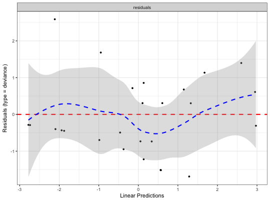
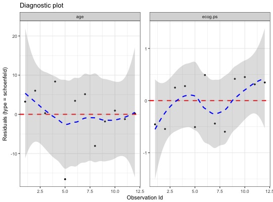
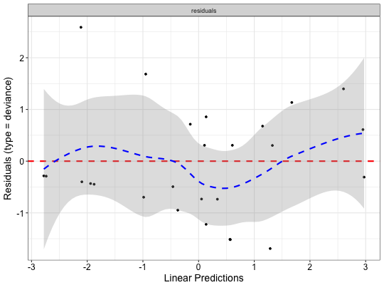
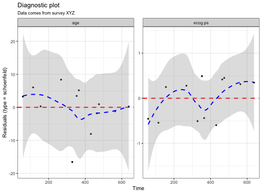
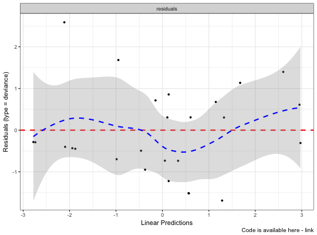
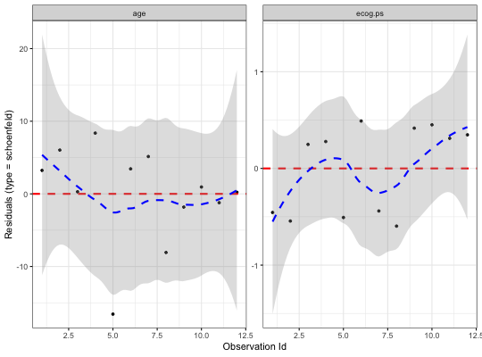
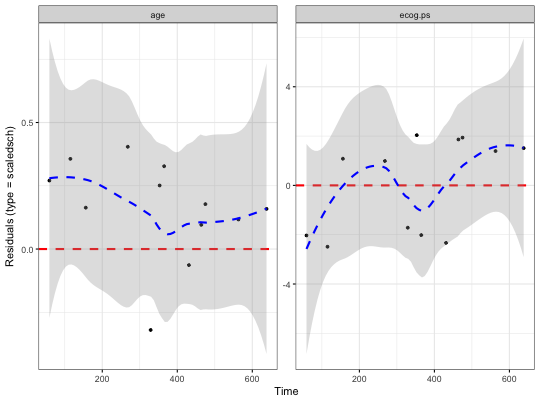

Displays diagnostics graphs presenting goodness of Cox Proportional Hazards Model fit, that can be calculated with coxph function.
ggcoxdiagnostics(fit, type = c("martingale", "deviance", "score", "schoenfeld", "dfbeta", "dfbetas", "scaledsch", "partial"), ..., linear.predictions = type %in% c("martingale", "deviance"), ox.scale = ifelse(linear.predictions, "linear.predictions", "observation.id"), hline = TRUE, sline = TRUE, sline.se = TRUE, hline.col = "red", hline.size = 1, hline.alpha = 1, hline.yintercept = 0, hline.lty = "dashed", sline.col = "blue", sline.size = 1, sline.alpha = 0.3, sline.lty = "dashed", point.col = "black", point.size = 1, point.shape = 19, point.alpha = 1, title = NULL, subtitle = NULL, caption = NULL, ggtheme = ggplot2::theme_bw())
"martingale", "deviance", "score", "schoenfeld", "dfbeta", "dfbetas"
and "scaledsch". Only enough of the string to
determine a unique match is required.residuals.coxph or
to the function ggpar for customizing the plot.ox.scale) a logical value indicating whether to show linear
predictions for observations (TRUE) or just indexed of observations
(FALSE) on X axis.c("linear.predictions", "observation.id", "time").
It defines what will be presented on OX scale. Possible values: y hat for "linear.predictions",
Id of an observation for "observation.id" or Time for "time".Y=0 level.hline = TRUE.sline = TRUE.theme.Returns an object of class ggplot.
ggcoxdiagnostics: Diagnostic Plots for Cox Proportional Hazards Model with ggplot2
library(survival) coxph.fit2 <- coxph(Surv(futime, fustat) ~ age + ecog.ps, data=ovarian) ggcoxdiagnostics(coxph.fit2, type = "deviance")ggcoxdiagnostics(coxph.fit2, type = "schoenfeld", title = "Diagnostic plot")ggcoxdiagnostics(coxph.fit2, type = "deviance", ox.scale = "time")#> Warning: ox.scale='time' works only with type=schoenfeld/scaledschggcoxdiagnostics(coxph.fit2, type = "schoenfeld", ox.scale = "time", title = "Diagnostic plot", subtitle = "Data comes from survey XYZ", font.subtitle = 9)ggcoxdiagnostics(coxph.fit2, type = "deviance", ox.scale = "linear.predictions", caption = "Code is available here - link", font.caption = 10)ggcoxdiagnostics(coxph.fit2, type = "schoenfeld", ox.scale = "observation.id")ggcoxdiagnostics(coxph.fit2, type = "scaledsch", ox.scale = "time")